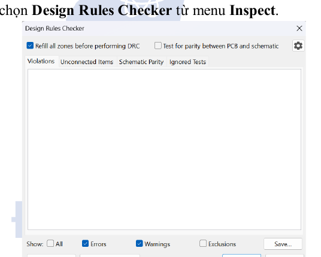
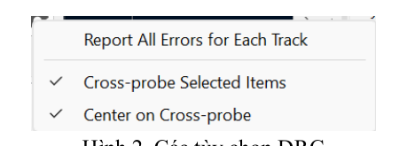
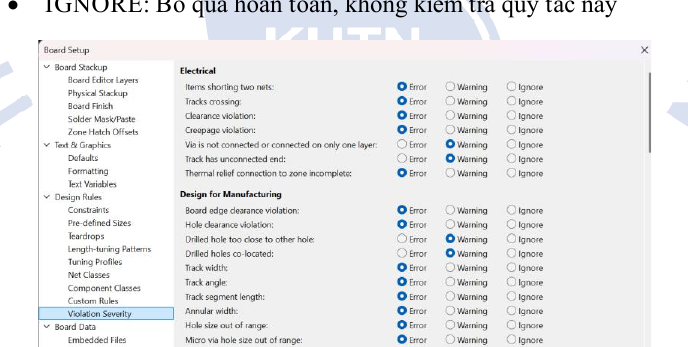
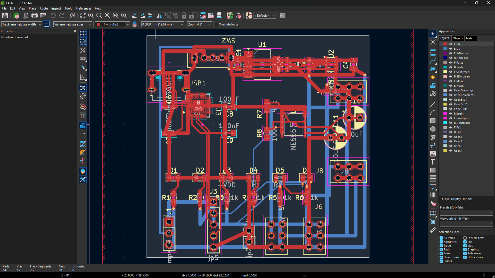
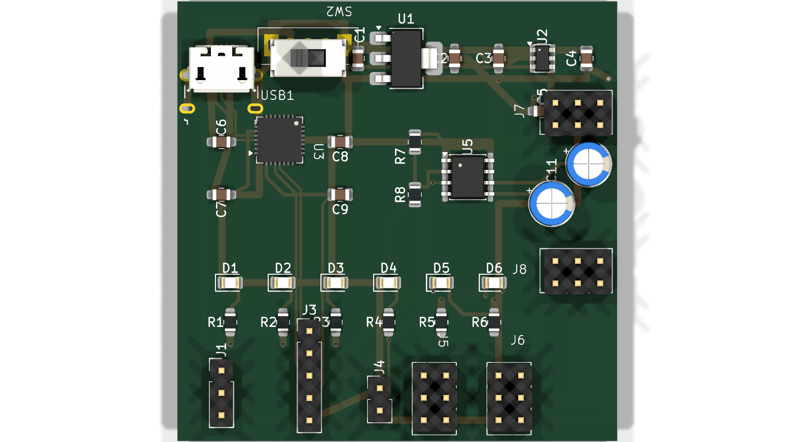
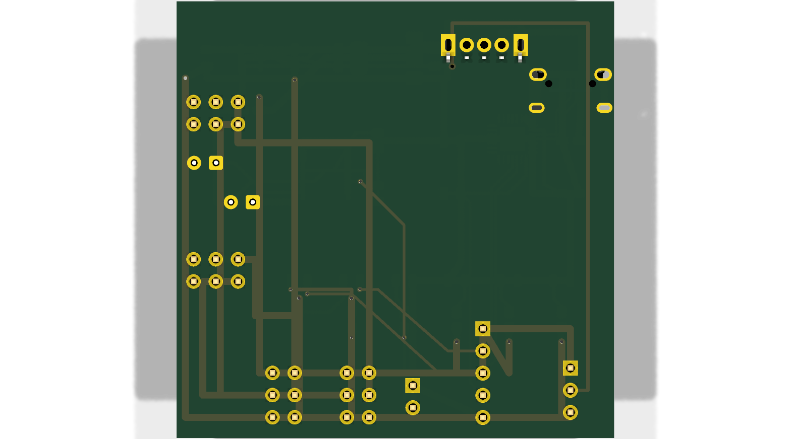
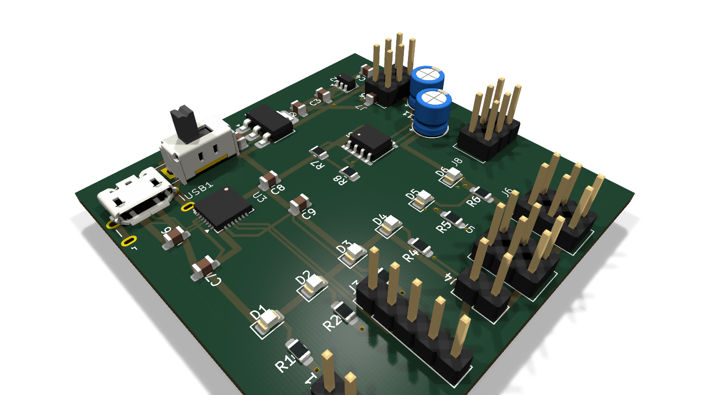

| Họ và tên: | Lê Ngọc Tường |
| MSSV: | 23207124 |
| Lớp: | 23DTV_CLC3 |
| Môn học: | Thiết kế mạch in PCB với KiCad (HK3/2025-2026) |
Mục tiêu: 1. Ứng dụng công cụ Design Rules Checker (DRC) của KiCad để kiểm tra, phát hiện và phân tích toàn diện các lỗi hình học, khoảng cách cách điện (clearance) và tương thích sơ đồ nguyên lý trên bo mạch đồ án cá nhân (Mạch nguồn USB - UART - NE555). 2. Xây dựng phương án kỹ thuật xử lý triệt để từng nhóm lỗi vi phạm, đảm bảo 0 lỗi hở mạch (0 Unconnected items). 3. Thiết lập hệ thống ràng buộc thiết kế (Design Rules & Constraints) theo đúng năng lực công nghệ thực tế của các nhà sản xuất PCB tiêu chuẩn (JLCPCB, PCBWay).
Công cụ Design Rules Checker (DRC) trong KiCad là chốt chặn kiểm định chất lượng bắt buộc trước khi tiến hành xuất tập tin sản xuất (Gerber và Drill files). DRC đảm bảo bo mạch vật lý đáp ứng đầy đủ hai tiêu chí sống còn: * Tính toàn vẹn điện từ và sơ đồ (Netlist/Schematic Parity): Tất cả các chân linh kiện (pads) được liên kết chính xác theo netlist, không có đường nối tắt sai mạng và không còn đường dây chưa nối (0 unconnected items). * Khả năng chế tạo và lắp ráp (DFM/DFA): Tất cả khoảng cách cách điện giữa các đối tượng dẫn điện (track-to-track, track-to-pad, pad-to-pad), khoảng cách cơ khí (copper-to-edge, hole-to-copper) và lớp mặt nạ hàn (solder mask bridge, silk overlap) đều tuân thủ dung sai chế tạo của nhà máy.

.kicad_sch) và bản vẽ mạch in (.kicad_pcb), cảnh báo ngay lập tức nếu có sự bất đồng bộ.
Violations (Lỗi quy tắc hình học/khoảng cách), Unconnected Items (Chân hoặc đường mạch chưa kết nối), Schematics Parity (Lỗi sai lệch giữa sơ đồ và PCB) và Ignored Tests (Các phép thử được người dùng bỏ qua có chủ đích).KiCad cho phép tùy biến mức độ phản hồi đối với từng quy tắc kiểm tra trong Board Setup → Design Rules → Violation Severity: * ERROR (Lỗi nghiêm trọng): Đánh dấu lỗi bắt buộc phải sửa chữa trước khi xuất file sản xuất. Vi phạm này có thể gây hỏng mạch điện (ngắn mạch, hở mạch) hoặc gây kẹt dây chuyền sản xuất. * WARNING (Cảnh báo): Nhắc nhở các yếu tố bất thường hoặc chưa tối ưu (ví dụ: chân linh kiện không kết nối theo thiết kế, lớp lụa đè nhẹ lên via có phủ mask). Kỹ sư cần rà soát và có thể chấp nhận nếu đã tính toán trước. * IGNORE (Bỏ qua): Tắt hoàn toàn việc kiểm tra đối với quy tắc tương ứng nhằm tăng tốc độ kiểm tra đối với các thiết kế đơn giản.

Inspect -> Clearance Resolution) để kiểm tra chi tiết khoảng cách thực tế so với khoảng cách yêu cầu, đồng thời chỉ rõ quy tắc nào đang chi phối giá trị đó (Net Class, Custom Rule hay Board Default).Quá trình quét kiểm tra tự động bằng lệnh kicad-cli pcb drc trên đồ án mạch nguồn đa năng cá nhân (50 × 50 mm, 38 linh kiện, 29 nets) cho kết quả xuất sắc ở hạng mục quan trọng nhất: Found 0 unconnected pads (kết nối mạng hoàn chỉnh 100%). Đồng thời, hệ thống phát hiện các cảnh báo hình học và lớp phủ gia công, được thống kê chi tiết theo bảng dưới đây:
| Mã lỗi DRC | Ý nghĩa & Bản chất kỹ thuật | Số lượng | Mức độ | Phương án kỹ thuật xử lý triệt để |
|---|---|---|---|---|
solder_mask_bridge |
Cầu mặt nạ hàn giữa hai đối tượng khác mạng quá hẹp (< 0.10 mm), có nguy cơ bong tróc tạo bắc cầu thiếc khi hàn sóng. | 150 | ERROR | Tăng khoảng cách tim dây (track clearance) từ 0.20 mm lên 0.25 mm tại vùng chân cắm dày đặc; thiết lập Solder mask minimum width về 0.10 mm phù hợp dây chuyền JLCPCB. |
shorting_items |
Hai đối tượng khác mạng dẫn điện đè lên nhau hoặc vi phạm khoảng cách ngắn mạch. | 92 | ERROR | Điều chỉnh lại tọa độ đường track chạy ngang qua pad của linh kiện khác mạng; sử dụng chế độ đi dây Shove Router để tự động né tránh pad. |
tracks_crossing |
Đường mạch trên cùng một lớp giao nhau khi chưa được phân tách qua via xuyên lớp. | 33 | ERROR | Chèn thêm via xuyên lớp (Via 0.8/0.4 mm) để chuyển phân đoạn dây sang lớp đối diện (nhảy từ F.Cu sang B.Cu). |
clearance |
Khoảng cách giữa hai đường track hoặc track với pad nhỏ hơn giá trị cài đặt trong Net Class (< 0.20 mm). | 23 | ERROR | Kéo dãn các đường dây song hành; tinh chỉnh điểm rẽ nhánh 45° tạo hành lang cách điện tối thiểu ≥ 0.20 mm. |
silk_overlap |
Hai đường mực in lụa (Silkscreen) đè lên nhau làm mờ ký hiệu hoặc tên linh kiện. | 26 | WARNING | Kéo dời Reference Designator (nhãn R1, C1, D1) ra khỏi vùng khung linh kiện lân cận; giảm kích thước chữ in lụa về 1.0 × 1.0 mm. |
silk_over_copper |
Mực in lụa đè lên pad đồng hở chì làm giảm độ dính ướt của mối hàn thiếc. | 19 | WARNING | Kích hoạt tính năng tự động cạo lụa (Subtract silkscreen from solder mask) khi xuất Gerber hoặc dời text cách mép pad ≥ 0.15 mm. |
lib_footprint_mismatch |
Footprint trên PCB có sửa đổi cục bộ so với thư viện gốc (C_0805, R_0805). | 25 | INFO/WARN | Chạy lệnh Update Footprints from Library... để đồng bộ footprint chuẩn hoặc xác nhận lưu phiên bản chỉnh sửa tùy biến. |
courtyards_overlap |
Vùng ranh giới an toàn cơ khí (Courtyard) giữa hai linh kiện SMD đè lên nhau. | 4 | WARNING | Dãn khoảng cách đặt linh kiện tối thiểu 0.50 mm giữa tụ và điện trở 0805 để đầu gắp máy SMT thao tác chuẩn xác. |
copper_edge_clearance |
Đường đồng nằm quá gần mép bo mạch (khoảng cách < 0.50 mm so với Edge.Cuts). |
2 | ERROR | Rút ngắn đoạn track biên, duy trì khoảng cách đường đồng đến đường cắt viền bo mạch ≥ 0.50 mm tránh bị lưỡi cưa V-Cut cắn đứt. |
hole_clearance |
Lỗ khoan quá sát với đường đồng hoặc lỗ khoan khác gây nguy cơ nứt phíp thủy tinh. | 1 | ERROR | Dời via cách xa mép lỗ định vị cơ khí hoặc lỗ chân cắm linh kiện ≥ 0.30 mm. |
Để bo mạch sau khi thiết kế có thể chuyển giao sản xuất hàng loạt với tỷ lệ thành phẩm (Yield Rate) > 99% và chi phí kinh tế tối ưu nhất, hệ thống Design Rules trong KiCad được cấu hình chuẩn xác theo năng lực công nghệ tiêu chuẩn (Standard Capabilities) của hai nhà sản xuất PCB uy tín hàng đầu hiện nay là JLCPCB và PCBWay (phân khúc mạch 2 lớp FR-4 tiêu chuẩn):
| Thông số Kỹ thuật (Parameters) | Khả năng chuẩn JLCPCB | Khả năng chuẩn PCBWay | Giá trị Cấu hình KiCad Khuyên dùng |
|---|---|---|---|
| Độ rộng đường mạch tối thiểu (Min Trace Width) | 0.127 mm (5 mil) | 0.150 mm (6 mil) | 0.200 mm (8 mil) (Tín hiệu) 0.800 mm (32 mil) (Đường nguồn) |
| Khoảng cách cách điện (Min Clearance) | 0.127 mm (5 mil) | 0.150 mm (6 mil) | 0.200 mm (8 mil) (An toàn chống chập) |
| Đường kính lỗ khoan via nhỏ nhất (Min Drill Hole) | 0.300 mm (12 mil) | 0.300 mm (12 mil) | 0.300 mm (Tín hiệu) / 0.400 mm (Nguồn) |
| Đường kính vành via nhỏ nhất (Min Via Diameter) | 0.500 mm (20 mil) | 0.500 mm (20 mil) | 0.600 mm (Tín hiệu) / 0.800 mm (Nguồn) |
| Vành khuyên đồng tối thiểu (Min Annular Ring) | 0.130 mm (5 mil) | 0.150 mm (6 mil) | 0.150 mm (6 mil) (Chống đứt vành khi khoan lệch) |
| Đồng cách mép bo (Copper to Edge Clearance) | 0.300 mm (V-Cut: 0.4mm) | 0.300 mm (V-Cut: 0.5mm) | 0.500 mm (20 mil) (Bảo đảm an toàn cắt V-Cut) |
| Cầu mặt nạ hàn tối thiểu (Min Solder Mask Bridge) | 0.100 mm (4 mil) | 0.100 mm (4 mil) | 0.100 mm (4 mil) (Chống dính chì giữa 2 pad kề) |
| Độ hở mặt nạ hàn (Solder Mask Clearance) | 0.050 mm (2 mil) | 0.050 mm (2 mil) | 0.050 mm (2 mil) (Mở rộng viền chì hàn) |
| Chiều cao / Chiều rộng chữ lụa (Min Silkscreen) | 0.80 mm / nét 0.15 mm | 0.80 mm / nét 0.15 mm | 1.00 mm / nét 0.15 mm (Đảm bảo sắc nét, dễ đọc) |
| Độ dày lớp đồng thành phẩm (Copper Thickness) | 1 oz (35 μm) | 1 oz (35 μm) | 1 oz (35 μm) (Chuẩn công nghiệp phổ biến) |
Bo mạch cá nhân sau khi áp dụng các giải pháp định tuyến tối ưu, phân bổ Net Classes và kiểm soát lỗi DRC thể hiện tính chuyên nghiệp cao, sẵn sàng phục vụ phủ đồng tiếp địa ở Lab 08:




solder_mask_bridge) và khoảng cách cơ khí biên (copper_edge_clearance) vì đây là hai nhóm lỗi thường gặp nhất gây hỏng mạch trong quy trình chế tạo thực tế tại xưởng.